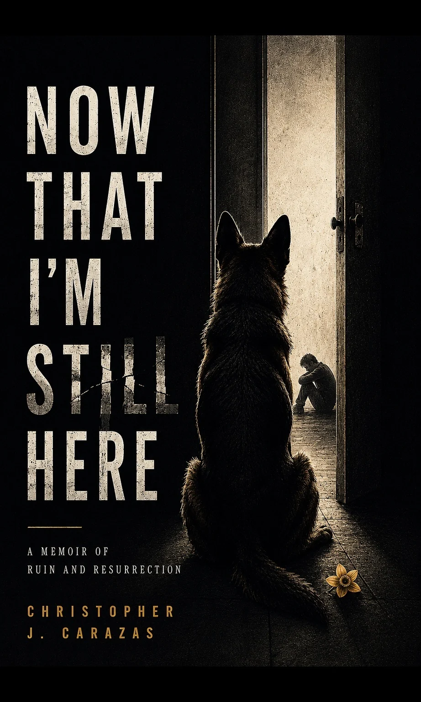
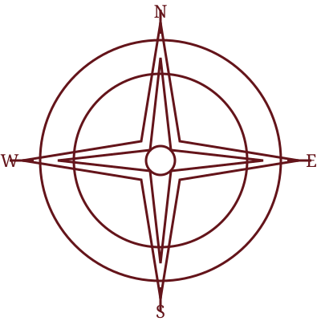

Independent publishing for memoir and serious nonfiction
A manuscript is not yet a book.
Sentinel House Press helps serious nonfiction authors shape, design, publish, and position books readers remember, without surrendering control.

A manuscript becomes a designed, published book.- No bestseller promisesHonest guidance and realistic expectations.
- You retain your copyrightYour intellectual property remains yours.
- You control your accountsPublishing access and sales data stay with you.
- Your manuscript stays confidentialProject details are reviewed with care.
Begin where the book actually is
Four ways into the work.
The recommendation comes before the package. Every engagement begins with the manuscript, the goals, and the decisions still unresolved.
Find the right path.
Manuscript condition, publishing route, risks, budget, timeline, and next-step recommendation.
Assessment services ↗ 02 / DEVELOPStrengthen the manuscript.
Developmental editing, copyediting, proofreading, positioning, and a disciplined revision plan.
Editorial services ↗ 03 / PUBLISHBuild the book.
Cover, interior, print and ebook files, metadata, KDP, IngramSpark, and quality control.
Production services ↗ 04 / EXTENDBuild beyond launch.
Author website, sales pathways, launch planning, reader communication, and measurement.
Platform services ↗Founding case study
One book.
An entire system.
Now That I’m Still Here became the working laboratory for a coordinated publishing process, from editorial development through production, distribution, author platform, and reader pathways.
- 204
- page memoir
- 2
- publication formats
- 2
- distribution systems
- 1
- integrated author platform
One book, one sequence
Decisions first.
Files later.
The work moves through defined gates so editing, design, metadata, distribution, and platform decisions do not ambush one another during launch week.
See the full process ↗- 01
Assess
Clarify the manuscript, reader, route, risk, and scope.
- 02
Develop
Strengthen structure, voice, logic, pacing, and clarity.
- 03
Design
Build the cover, interior, files, and book-object experience.
- 04
Publish
Coordinate metadata, platforms, proofing, and distribution settings.
- 05
Extend
Give the book a website, sales path, launch plan, and long-term home.
The author-control promise
Your book.
Your copyright.
Your accounts.
Your decisions.
Sentinel House Press provides professional guidance and execution. Authors retain meaningful control of their work, publishing accounts, royalties, and final choices.

Proudly based in Plymouth, Massachusetts
Made in Plymouth.
Built for authors everywhere.
Sentinel House Press is rooted in America’s Hometown, a place shaped by harbor, memory, preservation, argument, and stories carried across generations.
That history asks for care, context, and responsibility. So does publishing.
Visit our home in Plymouth ↗Not every author needs us
The right fit matters.
- You have a serious nonfiction manuscript or substantial draft.
- You are open to editorial challenge.
- You can invest in professional support.
- You value quality, ownership, transparency, and process.
- You need the cheapest upload by next Tuesday.
- You expect guaranteed sales or bookstore placement.
- You want unlimited work for a fixed fee.
- You consider editorial feedback a hostile act.
Investment and availability
Clear scope before commitment.
Most relationships begin with a free fit inquiry followed, where appropriate, by a paid fixed-fee assessment or consultation. Larger engagements use documented scope, defined milestones, and itemized third-party costs.